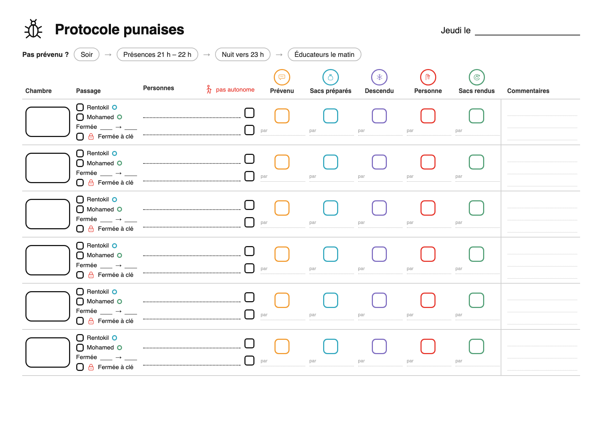
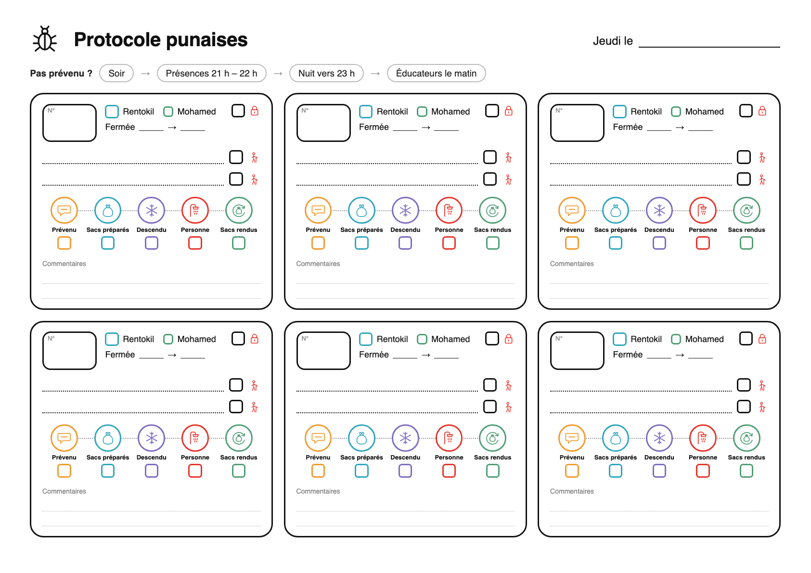
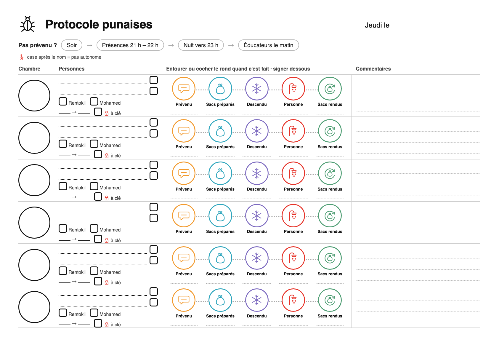
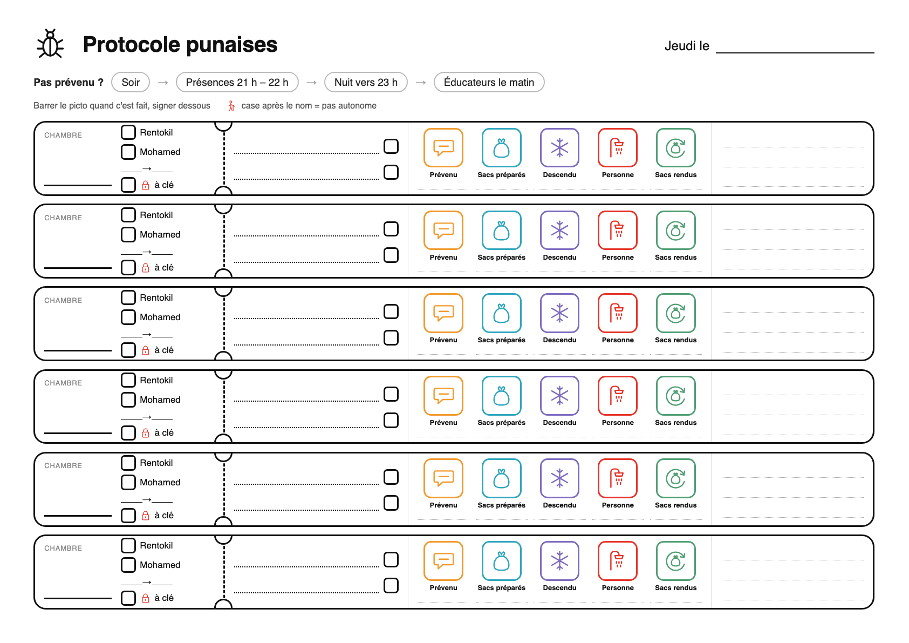

A · Le tableau aéré une colonne par étape, une case de couleur

B · Les fiches chambres 6 cartes, comme sur l'écran

C · La frise on coche ou on entoure le rond

D · Le ticket une bande par chambre, le picto est la case
